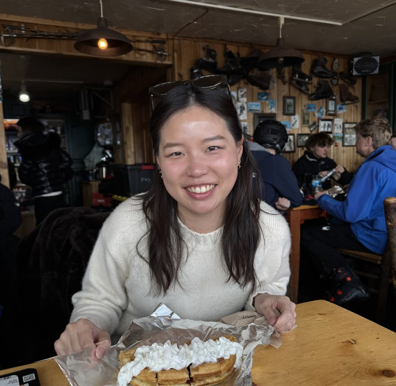

|
Siyeon Kim Hi, I am Siyeon Kim. I'm a 5th year PhD student in Utah Learning Lab for Manipulation Autonomy (Ll4ma) at University of Utah in Salt Lake City, working with Prof. Tucker Hermans. I received my master's degree in Computer Science and Engineering (CSE) at Ewha Womans University in Seoul, South Korea, with Prof. Young J. Kim in 2021. I am looking for research internships for Summer 2027. |
 |
ResearchMy research focuses on robot learning for contact-rich manipulation, with an emphasis on world models and planning under uncertainty. To manipulate everyday objects, a robot must anticipate what its actions will do, even though contact makes the outcome uncertain and much of the scene is hidden from view. I study how robots can learn to predict the multiple possible outcomes of an action, how multiple objects move together under contact, and how a belief over occluded or unobserved object states should be updated through interaction. My long-term goal is to build world models with memory that enable long-horizon manipulation under partial observability. |
News
Older news
|
Publications* Equal contribution. |


| Last updated: Nov 2026. Template from Jon Barron. |